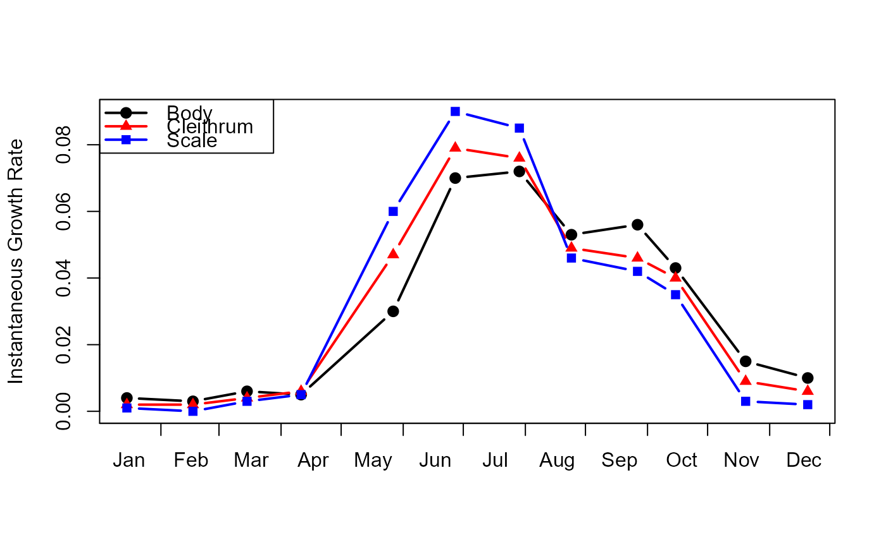

Instantaneous growth rates for two calcified ageing structures.
Source:R/Casselman1990.R
Casselman1990.RdInstantaneous growth rates (percent change per day) for body growth and two calcified ageing structures from age 1-4 female Northern Pike (Esox lucius) from Wickett Lake, Ontario.
Format
A data frame with 12 observations on the following 4 variables.
- day
A numeric vector of days since the beginning of the study.
- body
A numeric vector of instantaneous growth rates (percent change per day) for body growth.
- cleithrum
A numeric vector of instantaneous growth rates (percent change per day) for cleithra.
- scale
A numeric vector of instantaneous growth rates (percent change per day) for scales.
Source
From Figure 8 of Casselman, J.M. 1990. Growth and relative size of calcified structures of fish. Transactions of the American Fisheries Society. 119:673-688.
Examples
data(Casselman1990)
# recreation of Casselman's (199) Figure 8.
p <- c(19,17,15); clr <- c("black","red","blue"); l <- 1
with(Casselman1990,
matplot(day,cbind(body,cleithrum,scale),type="b",lwd=2,pch=p,col=clr,lty=l,
ylab="Instantaneous Growth Rate",xaxt="n",xlab="")
)
axis(1,at=c(0,31,60,91,121,152,182,213,243,274,304,335,365),tick=TRUE,labels=FALSE)
axis(1,at=c(15,46,76,107,137,168,198,229,260,291,321,352),tick=FALSE,
labels=c("Jan","Feb","Mar","Apr","May","Jun","Jul","Aug","Sep","Oct","Nov","Dec"))
legend("topleft",legend=c("Body","Cleithrum","Scale"),pch=p,col=clr,lty=l,lwd=2)
